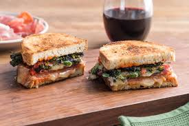

Italian Sandwich Recipe

Whenever you need something quick that doesn't need you to fire up the stove, try making this sandwich.
It's a great lunch item either warm or cold.
Ingredients
- Sourdough Bread
- Salami
- Pepperoni
- Honey baked Ham
- Provolone
- Mayonnaise
- Dijon Mustard
- Banana Peppers
- Creole Seasoning
Steps
- Spread a small amount of mayo on two slices of sourdough bread.
- Add three pieces of salami and pepperoni on one slice, and two pieces of ham and cheese to the other.
- Sprinkle creole seasoning on each bread slice.
- Toast both slices in either a toaster oven or a microwave for thirty seconds.
- Add mustard and banana peppers as you see fit and enjoy.